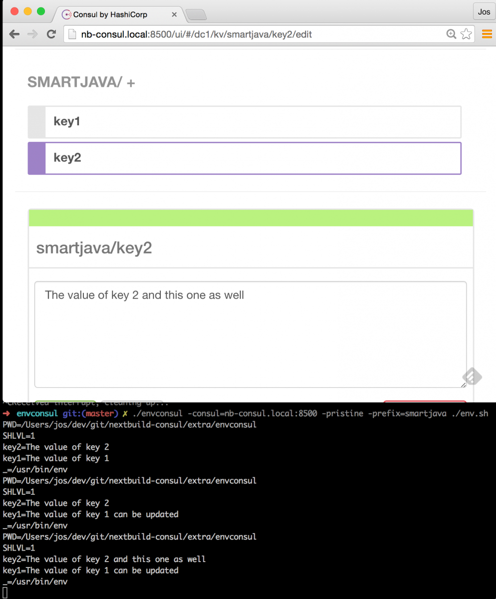

Service Discovery with Docker and Consul: part 2
So, welcome to the second part of the series on using Consul for service discovey together with docker. In this second article we'll look at how you can use a number of Consul related tools, so make service discovery, and a couple of other related functionalities a lot easier.
For the other articles in this series you can look here:
Review architecture and what are we going to do
In this article we'll expand on the setup we created in the previous article. In that article we created the following microservices architecture using Docker and Consul:

So, if you haven't done so, walk through the steps in that article, and make sure you've got a setup that can use Docker Swarm, Docker Compose and has the correct Docker network setup. To check whether everything is setup correctly, check the output of the following commands:
# See the previous article for the definitions of these commands
#
# First, check Consul. If consul isn't up, the swarm won't come up or work.
$ . dm-env nb-consul
$ docker ps --format '\t\t\t'
b5d55e6df248 progrium/consul "/bin/start -server -" clever_panini
# if consul isn't up, make sure to start it, before trying any of the swarm
# commands.
$ . dm-env nb1 --swarm
$ docker ps -a --format '\t\t\t'
bf2000882dcc progrium/consul "/bin/start -ui-dir /" nb1/consul_agent_1
a1bc26eef516 progrium/consul "/bin/start -ui-dir /" nb2/consul_agent_2
eb0d1c0cc075 progrium/consul "/bin/start -ui-dir /" nb3/consul_agent_3
d27050901dc1 swarm:latest "/swarm join --advert" nb3/swarm-agent
f66738e086b8 swarm:latest "/swarm join --advert" nb2/swarm-agent
0ac59ef54207 swarm:latest "/swarm join --advert" nb1/swarm-agent
17fc5563d018 swarm:latest "/swarm manage --tlsv" nb1/swarm-agent-master
# this should at least list the swarm master, swarm agents, and the consul agents.
# if not, see previous article on how to setup your environment.
# the last thing we need to check is our network. When the swarm master is selected
# run the following command:
$ docker network ls | grep -i my-net
8ecec72e7b68 my-net overlay
# if it shows an overlay network with my-net we're all set.
Should you see some frontend or backend services, it's probably best to stop and remove them. That way you can follow the commands in the rest of this article.
So what will we be doing in this article. Well, we'll show you how to use the following two tools from the Consul universe:
- Consultemplate: With Consultemplate you can listen to events from Consul (e.g when a service is added), and based on these updates, rewrite and reload a configuration file. We'll use this to automatically update the configuration of an HAProxy based reverse proxy, with the latest set of healthy services.
- EnvConsul: With Envconsul you can easily read environment variables directly from Consul, instead of having to pass them in manually when you start a docker container. We will show how you could use this with the services we use in these articles.
Consultemplate, docker and HAProxy
In the previous setup we created an architecture as shown in the figure above. While this already worked great by using the DNS functions of Consul for service discovery and some basic failover, we had to rely on DNS and socket timeouts, to determine when a service became unhealthy. While this worked, it was not that reliable, and only offered some simple failover and loadbalancing functionality. What we're going to do in this scenario is create the following:
So the scenario we'll have is the following:
- A user will access our frontend service through the HAProxy.
- HAProxy will forward the request to one of the healthy services.
- The fronted service, wants to access a backend service. It also does this through the HAProxy component.
Consul will make sure that whenever a service registers itself with Consul, it updates the configuration of HAProxy.
How does it work
If you've pulled the repository for these articles (https://github.com/josdirksen/next-build-consul) you can also find a directory called extra/consul-template. In that directory is the HAProxy that we'll use for this example. I've also added it to dockerhub (https://hub.docker.com/r/josdirksen/demo-haproxy/), which makes using it a bit easier. Before we look at how we need to define our template, lets look at what this docker image does. Easiest is to look at the startup script:
#!/bin/bash
HAPROXY="/etc/haproxy"
PIDFILE="/var/run/haproxy.pid"
CONFIG_FILE=${HAPROXY}/haproxy.cfg
cd "$HAPROXY"
haproxy -f "$CONFIG_FILE" -p "$PIDFILE" -D -st $(cat $PIDFILE)
/usr/local/bin/consul-template -consul=${CONSUL_ADDRESS} -config=/consul.hcl
Nothing too special here, what happens it that when we start this container, consul-template will run with the specified configuration file. Note that we need to provide the CONSUL_ADDRESS environment variable to point consul-template to either one of our agents, or the consul server. The interesting stuff is in the consul.hcl file:
max_stale = "10m"
retry = "10s"
wait = "5s:20s"
template {
source = "/etc/haproxy/haproxy.template"
destination = "/etc/haproxy/haproxy.cfg"
command = "/hap.sh"
perms = 0600
}
this file is pretyy self explanatory. Basically what happens is that whenever something changes in Consul, the template haproxy.template will be ran against the information in Consul, and the result will replace the haproxy.cfg file. After that the hap.sh command is run to reload the configuration. For completeness sake, the hap.sh file looks like this:
#!/bin/bash
haproxy -f /etc/haproxy/haproxy.cfg -p /var/run/haproxy.pid -D -st $(cat /var/run/haproxy.pid)
What this does, is reload the configuration file in a clean manner. So, what is in the template? Lets look at the haproxy.template:
global
log 127.0.0.1 local0
log 127.0.0.1 local1 notice
chroot /var/lib/haproxy
user haproxy
group haproxy
defaults
log global
mode http
option httplog
option dontlognull
balance roundrobin
timeout connect 5000
timeout client 50000
timeout server 50000
errorfile 400 /etc/haproxy/errors/400.http
errorfile 403 /etc/haproxy/errors/403.http
errorfile 408 /etc/haproxy/errors/408.http
errorfile 500 /etc/haproxy/errors/500.http
errorfile 502 /etc/haproxy/errors/502.http
errorfile 503 /etc/haproxy/errors/503.http
errorfile 504 /etc/haproxy/errors/504.http
listen stats
bind *:8001
stats enable
stats uri /
stats auth admin:123123q
stats realm HAProxy\ Statistics
frontend nb-front
bind *:1080
mode http
default_backend nb-frontend
frontend nb-back
bind *:1081
mode http
default_backend nb-backend
backend nb-frontend
balance roundrobin
server : check
backend nb-backend
balance roundrobin
server : check
The first couple of lines aren't interesting. It becomes interesting where we define the frontend and the backend elements. What we say here is that we specify that haproxy will listen to request for the frontend at port 1080, and forward those requests to the services defined in backend nb-frontend. In this element we configure a template. In this example we take all the services with the name frontend-service from Consul, and for each service we write down an entry. So when we call haproxy on port 1080, it'll forward the request to any of the services with the name frontend-service registerd in Consul. We do exactly the same for the backend-service.
Run it!
So, now that we know how it works, it's time to run this haproxy. We've defined a docker-compose file for this, which will run HAProxy in node nb1:
version: '2'
services:
nb-proxy:
image: josdirksen/demo-haproxy
container_name: nb-haproxy
ports:
- 1080:1080
- 1081:1081
environment:
- CONSUL_ADDRESS=192.168.99.106:8500
- "constraint:node==nb1"
networks:
default:
external:
name: my-net
Execute the following commands to do this:
# make sure we're at the swarm master
$ . dm-env nb1 --swarm
# in the root of the nextbuild-consul project
$ docker-compose -f ./docker-compose-haproxy.yml up -d
Creating nb-haproxy
$ docker ps -a --format '\t\t\t'
dc28caa4c420 josdirksen/demo-haproxy "/startup.sh" nb1/nb-haproxy
bf2000882dcc progrium/consul "/bin/start -ui-dir /" nb1/consul_agent_1
a1bc26eef516 progrium/consul "/bin/start -ui-dir /" nb2/consul_agent_2
eb0d1c0cc075 progrium/consul "/bin/start -ui-dir /" nb3/consul_agent_3
d27050901dc1 swarm:latest "/swarm join --advert" nb3/swarm-agent
f66738e086b8 swarm:latest "/swarm join --advert" nb2/swarm-agent
0ac59ef54207 swarm:latest "/swarm join --advert" nb1/swarm-agent
17fc5563d018 swarm:latest "/swarm manage --tlsv" nb1/swarm-agent-master
In my setup I can see that the HAProxy has started. But since we haven't got any backend or frontend services running, the configuration of haproxy should reflect that:
$ docker exec -ti nb1/nb-haproxy cat /etc/haproxy/haproxy.cfg | tail -n 15
frontend nb-front
bind *:1080
mode http
default_backend nb-frontend
frontend nb-back
bind *:1081
mode http
default_backend nb-backend
backend nb-frontend
balance roundrobin
backend nb-backend
balance roundrobin
And if we open up either port 1080 (for the frontend) or 1081 (for the backend API), we'll see an error from HAProxy.
This is to be expected, since we haven't got any frontend or backend service running. So lets give HAProxy a number of backend services to work with:
$ docker-compose -f ./docker-compose-backend.yml up -d
Creating Backend2
Creating Backend3
Creating Backend1
Now we should have a number of backends running behind HAProxy. First lets check if Consul updated our HAProxy instance:
$ docker exec -ti nb1/nb-haproxy cat /etc/haproxy/haproxy.cfg | tail -n 8
backend nb-frontend
balance roundrobin
backend nb-backend
balance roundrobin
server a1bc26eef516 10.0.9.7:8081 check
server bf2000882dcc 10.0.9.9:8081 check
server eb0d1c0cc075 10.0.9.8:8081 check
Cool, right! Haproxy now has three services defined. This should allow us to call http://nb1.local:1081 and it should return the API of one of the backend services:
If you refresh a couple of times, you should see it cycle throught the various services.
And if we kill one, we should see it automatically skip the killed one:
$ docker stop nb1/Backend1
nb1/Backend1
$ curl nb1.local:1081
{"result" : {
"servername" : "Server2",
"querycount" : 80
}
}
$ curl nb1.local:1081
{"result" : {
"servername" : "Server3",
"querycount" : 86
}
}
Now lets see if our frontend services can use this in the same manner. For this we start the frontend components like this:
$ docker-compose up -f ./docker-compose-frontend-proxy
# remember we killed one of the backend services, so we only see two backend ones
$ docker exec -ti nb1/nb-haproxy cat /etc/haproxy/haproxy.cfg | tail -n 10
backend nb-frontend
balance roundrobin
server a1bc26eef516 10.0.9.11:8090 check
server bf2000882dcc 10.0.9.9:8090 check
server eb0d1c0cc075 10.0.9.10:8090 check
backend nb-backend
balance roundrobin
server a1bc26eef516 10.0.9.7:8081 check
server eb0d1c0cc075 10.0.9.8:8081 check
And it looks like HAProxy updated correctly with the new services. Now we should be able to call port 1080 on haproxy, to get one of the frontend service, and use the button to call one of the available backends services (once again through HAproxy).
And it works as expected! If you refresh this page, you'll see it cycle through the frontend services, and when you hit the button a couple of times, it will only call the services that are available. And, as you'd expect, once we start backend service one again, it'll show up in the list when hitting the button:
$ docker start nb1/Backend1
nb1/Backend1
Results in:
HAProxy and consul template Conclusions
This was a very quick introduction into using Docker together with Consultemplate and HAProxy. As you've seen, getting all this to work is rather easy. Once you've got docker and consul configured tying in extra components becomes much easier. In a real-world scenario we'd also have HAProxy register itself with Consul, so other services can easily find the HAProxy instance.
As the last part of this article, we'll have a quick look at some of the feature EnvConsul provies.
EnvConsul, easily provide environment properties when starting up an application.
The normal way of passing configuration data into application (especially in a docker / microservices architecture) is by using environment variables. This is an easy, non-intrusive, language agnostic way of configuring your services. It's even one of the subjects of the 12 factor app.
"The twelve-factor app stores config in environment variables (often shortened to env vars or env). Env vars are easy to change between deploys without changing any code; unlike config files, there is little chance of them being checked into the code repo accidentally; and unlike custom config files, or other config mechanisms such as Java System Properties, they are a language- and OS-agnostic standard."
However, it becomes very cumbersome when you're dealing with big applications, or large configurations, especially when you have to deal with escaping quotes / linebreaks etc.
Luckily we can solve this problem with Consul. As you probably know by now, Consul is also a distributed Key-Value store:
With EnvConsul, we can use information from the KV store inside Consul as environment parameters before starting our application. So how would this work? We can test this very easy, since EnvConsul is just a golang executable which we can run. I've added the Mac version in the repository (in the extras directory), but you can download builds for your OS from here: https://releases.hashicorp.com/envconsul/0.6.1/
We'll just run it, and see what happens:
./envconsul -consul=nb-consul.local:8500 -prefix docker -once env
...
network/v1.0/endpoint/815dd44b77f391bd9a63f4e107aa1a7d3f371c91427abcf4be34493aa7ec25cd/=
nodes/192.168.99.112:2376=192.168.99.112:2376
swarm/nodes/192.168.99.110:2376=192.168.99.110:2376
...
I've left most of the result out, but basically what we do here, is use env-consul to get all the keys it has stored in the docker tree, and add those as environment variables. After these are set we run the env command, which just outputs all the environment variables we have. If you run this yourself you'll see a whole lot of docker-network and docker-swarm related information set as environment variables.
We can of course also set a number of KV pairs ourselves:
And when we retrieve those, we can see that the values are passed directly into our command as environment variables:
$ ./envconsul -consul=nb-consul.local:8500 -prefix smartjava -once env | tail -n 2
key2=The value of key 2
key1=The Value of Key 1
This, however, isn't everything you can do with envconsul. It also provides an easy way to react to changes in the key value pairs. Imagine you have a service running, which is configured, through an env property. And if that env property changes, you should in fact restart the services. This is something EnvConsul can do for you:
$ cat env.sh
#!/bin/bash
env
tail -f /dev/null
$ ./envconsul -consul=nb-consul.local:8500 -pristine -prefix=smartjava ./env.sh
PWD=/Users/jos/dev/git/nextbuild-consul/extra/envconsul
SHLVL=1
key2=The value of key 2
key1=The Value of Key 1
_=/usr/bin/env
At this point, the process will keep running, and envconsul will wait for updates to the Consul keystore. So when we update something there, this is the result:

As you can see in this image, whenever we change a value in the KV store, our script is restarted with the new configuration passed in as env variables.
Conclusions
In this article, we showed that using HAProxy is actually very easy to do. You can incorporate it in your architecture using the same concepts and ideas we saw in the previous article. Combine this with ConsulTemplate, and getting a highly configurable, software loadbalancer setup is a piece of cake.
Another cool piece of technology is EnvConsul, this nicely integrates with the distributed KV store provided by Consul. It even provides functionality to restart your application on configuration changes, which is a really powerful feature.
And that wraps it up for the second article in this series. In the next part of this series we'll look at how you can simplify registration of services with Consul. So replace the custom script we showed in the previous article with a more advanced solution.